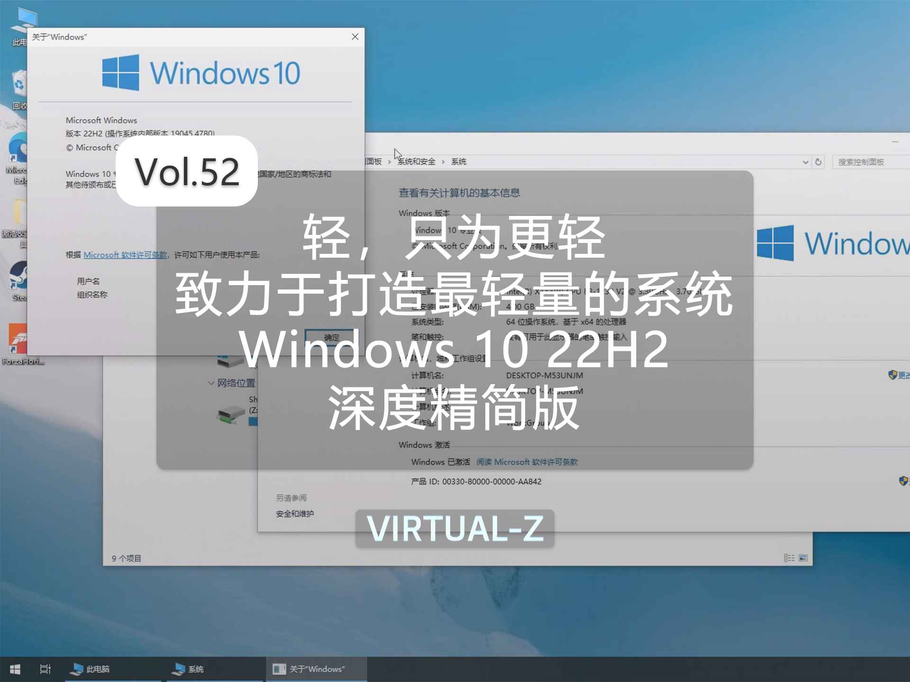
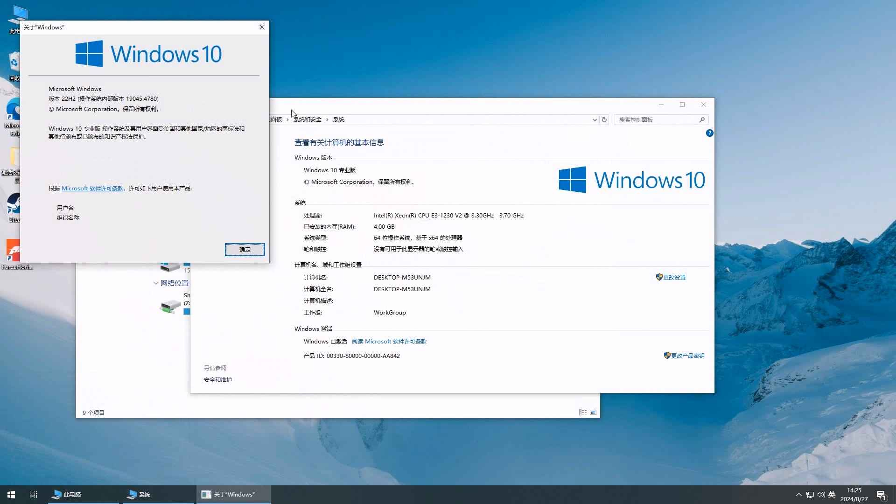

Windows 10 19045.4780 深简版
Z-OS新版-Iceberg系列
系统介绍
轻，只为更轻。在那些看似平静的海面上，你可能不会注意到隐藏在水下的巨大力量——冰山。Iceberg这个系列的系统不论是内存、或者是储存，占用会更小一些。有的小伙伴可能就会问了，这个系统不会精简到残废吧，这里亲测能正常登录Microsoft账号，还能够运行steam的一些游戏。
系统改动内容
1.运行库集成：.net3.5，.net4.8（自带）
2.精简优化内容：语音识别、Windows TIFF IFilter、Windows 系统评估工具、电子钱包服务、Windows 邮件、OneDrive 桌面客户端、轻松传送、安全中心、Windows 备份、Windows To Go、快速助手、零售演示内容、SmartScreen、Windows Defender Windows 安全中心、Windows 混合现实、Microsoft Edge、闹钟和时钟、相机、Cortana、反馈中心、获取帮助、邮件和日历、地图、Microsoft Pay、Microsoft Solitaire Collection、混合现实门户、Office、OneNote、画图 3D、人脉、Skype、便笺、使用技巧、天气、Xbox 应用、Xbox Game Bar Plugin、Xbox Game Bar、Xbox 游戏语音窗口、Xbox Identity Provider、Xbox Live、手机连接、空间音效、轻松访问工具、Active Directory 轻型目录服务、AllJoyn Router Service、应用程序虚拟化、Unified Telemetry Client、.NET assembly 缓存、按需访问、Windows 生物识别服务、分支缓存客户端、Windows客户体验改善计划 CEIP、Windows 符号调试器引擎、DVD 播放、轻松访问主题、设备锁定、Embedded Mode、工作文件夹客户端、企业数据保护、AddSuggestedFoldersToLibraryDialog、File Server Resource Manager、Windows 防火墙、多余字体、、受保护的主机、软盘、共享调制解调器、智能卡、Telephony、TV Tuner 编码与支持、Intel Indeo 编码器、内核调试、旧版组件、Location Service(位置服务)、适用于 Linux 的 Windows 子系统、Manifest 备份、Windows 多媒体编码器、内存调试、图片密码、联系人数据、Point of Service、Windows Provisioning、远程访问自动拨号管理器、远程差分压缩 、远程协助、远程注册表、UI Ribbon、权限管理支持、Windows 搜索、Shared PC 模式、共享媒体控制面板、SIH 客户端、简单 TCP/IP 服务、步骤记录器、同步中心、系统恢复、Telnet 客户端、缓存与临时文件、TFTP 客户端、虚拟 Smart Card、用户体验虚拟化、用户数据存储、UNP-通用通知平台、User Data Access、视频压缩管理器编码器、WaaS 评估、网络摄像头体验、WLAN 感知、CBSPreview、Windows 恢复、Windows 远程管理、写字板，还有许多杂七杂八的内容…
图片展示


- 下载 （提取码:2LdU）
本站所有系统镜像及软件均来源于互联网，仅为个人学习测试使用，请在下载后24小时内删除。版权归原作者所有，不得用于商业用途，否则后果自负！请支持原版系统及软件！
© 2024 Virtual-Z All rights reserved.